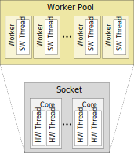
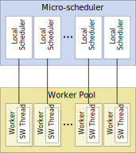
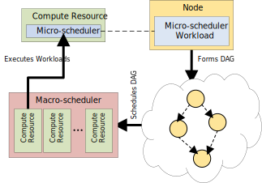

This section is a brief overview of how to get started with GTS. See Programming Model for the gritty details.
Worker Pool
A Worker Pool is the fundamental executor of CPU work. It determines how SW Worker threads are mapped to a processor's HW threads. By default, GTS creates one SW thread per HW thread to avoid oversubscription.

Micro-scheduler
A Micro-scheduler defines the scheduling policy of work onto a Worker Pool. It is the fundamental scheduler of work onto the CPU. It creates and consumes Tasks as a fundamental unit of work. A Micro-scheduler is always mapped to a Worker Pool with a 1:1 mapping between Local Schedulers and Workers.

Example
This program increments the values of all elements in a vector using a parallel-for pattern.
#include "gts/micro_scheduler/WorkerPool.h"
#include "gts/micro_scheduler/MicroScheduler.h"
#include "gts/micro_scheduler/patterns/ParallelFor.h"
...
gts::WorkerPool workerPool;
std::vector<int> vec(1000000, 0);
parFor(vec.begin(), vec.end(), [](std::vector<int>::iterator iter) { (*iter)++; });
for (auto const& v : vec)
{
}
printf("Success!\n");
Ouput:
Macro-scheduler
A Macro-scheduler is a high level scheduler of persistent task DAGs. It produces Schedules onto Compute Resources, like the Micro-scheduler. The Task DAGs are formed by Nodes, with each Node containing Workloads that define what Compute Resource it can be scheduled to.

pMacroScheduler->
init(macroSchedulerDesc);
Example 1
This program builds a DAG of Nodes, where each Node prints its name. For this example we use the Dynamic Micro-scheduler implementation of the Macro-scheduler.
#include "gts/micro_scheduler/WorkerPool.h"
#include "gts/micro_scheduler/MicroScheduler.h"
#include "gts/macro_scheduler/Node.h"
#include "gts/macro_scheduler/schedulers/dynamic/DynamicMicroScheduler_ComputeResource.h"
#include "gts/macro_scheduler/schedulers/dynamic/DynamicMicroScheduler_Workload.h"
#include "gts/macro_scheduler/schedulers/dynamic/DynamicMicroScheduler_MacroScheduler.h"
...
gts::WorkerPool workerPool;
pMacroScheduler->
init(macroSchedulerDesc);
pA->
addWorkload<DynamicMicroSchedulerLambda_Workload>([](WorkloadContext
const&){ printf(
"A "); });
pB->
addWorkload<DynamicMicroSchedulerLambda_Workload>([](WorkloadContext
const&){ printf(
"B "); });
pC->
addWorkload<DynamicMicroSchedulerLambda_Workload>([](WorkloadContext
const&){ printf(
"C "); });
pD->
addWorkload<DynamicMicroSchedulerLambda_Workload>([](WorkloadContext
const&){ printf(
"D "); });
pA->addChild(pB);
pA->addChild(pC);
pB->addChild(pD);
pC->addChild(pD);
pMacroScheduler->
executeSchedule(pSchedule, microSchedulerCompResource.id(),
true);
Ouput:
or
Example 2
This program builds a DAG of Nodes, where Node runs a more fine-grained computation using a Micro-scheduler. The DAG can be seen as an execution flow that organizes the lower level computation. In this example we will divide up execution on a vector over the Nodes.
ParallelFor parFor(microScheduler);
std::vector<int> vec(1000000, 0);
pA->
addWorkload<DynamicMicroSchedulerLambda_Workload>([&parFor, &vec](WorkloadContext
const& ctx)
{
parFor(vec.begin(), vec.end(), [](std::vector<int>::iterator iter) { (*iter)++; });
});
pB->
addWorkload<DynamicMicroSchedulerLambda_Workload>([&parFor, &vec](WorkloadContext
const&)
{
parFor(vec.begin(), vec.begin() + vec.size() / 2, [](std::vector<int>::iterator iter) { (*iter) += 2; });
});
pC->
addWorkload<DynamicMicroSchedulerLambda_Workload>([&parFor, &vec](WorkloadContext
const&)
{
parFor(vec.begin() + vec.size() / 2, vec.end(), [](std::vector<int>::iterator iter) { (*iter) += 3; });
});
pD->
addWorkload<DynamicMicroSchedulerLambda_Workload>([&parFor, &vec](WorkloadContext
const&)
{
parFor(vec.begin(), vec.end(), [](std::vector<int>::iterator iter) { (*iter)++; });
});
pA->addChild(pB);
pA->addChild(pC);
pB->addChild(pD);
pC->addChild(pD);
pMacroScheduler->
executeSchedule(pSchedule, microSchedulerCompResource.id(),
true);
for (auto iter = vec.begin(); iter != vec.begin() + vec.size() / 2; ++iter)
{
}
for (auto iter = vec.begin() + vec.size() / 2; iter != vec.end(); ++iter)
{
}
printf ("SUCCESS!\n");
Ouput:
Examples Source
 1.8.20
1.8.20